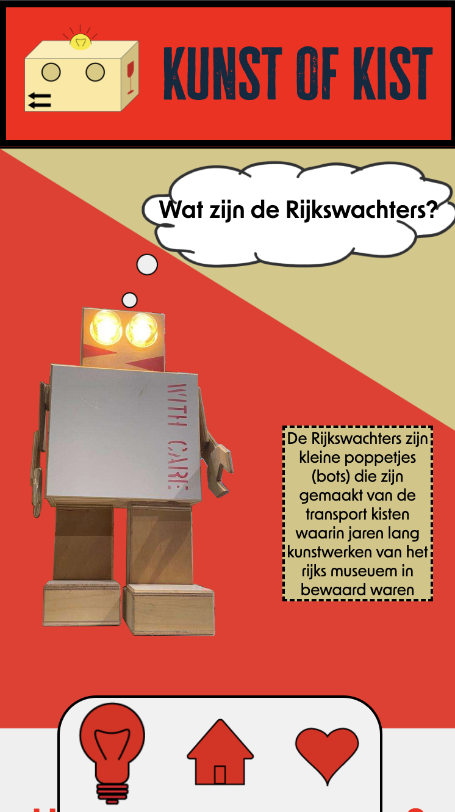
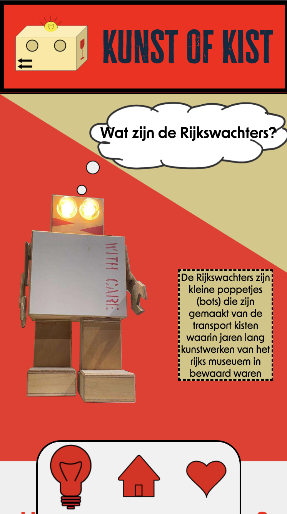
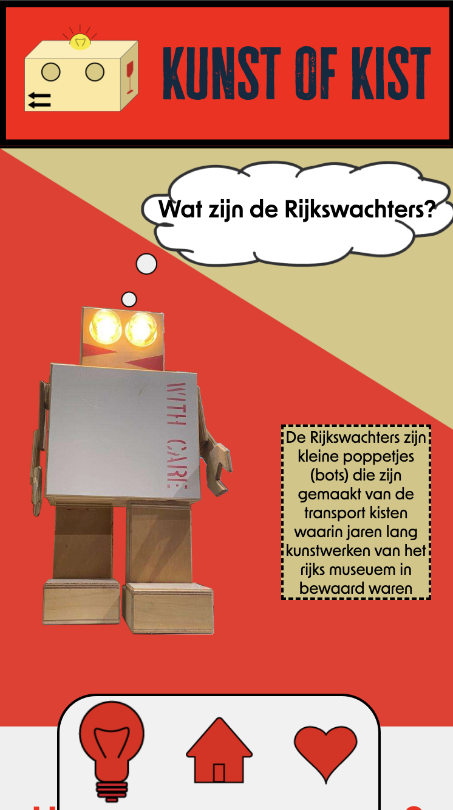
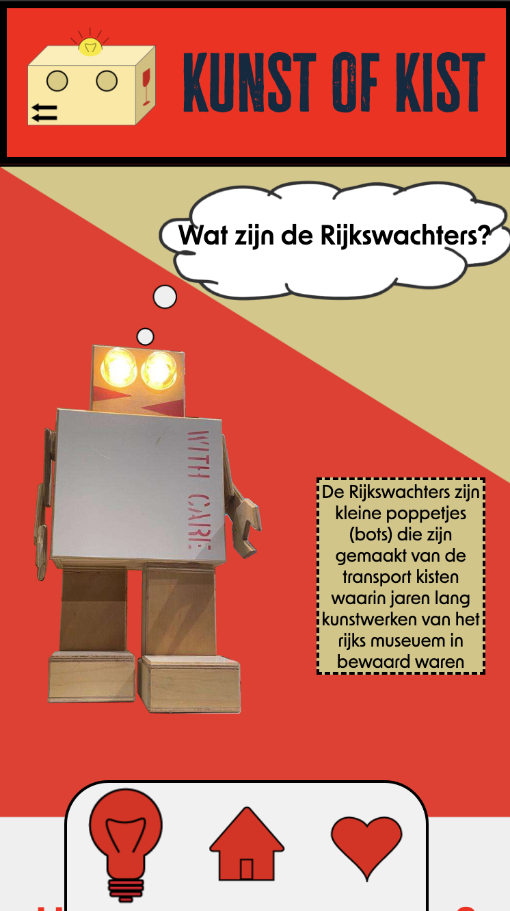

 

ui/ux design / teamwork To learn more about other cultures and their foods we designed a recipe app focussed on Mexican Tostadas.
Read moreHtml and css designing for a subject im passionate about. Structural information design.
Link to website
ui design / individual Where we learned more about the adobe programs as well as design principles and how to apply them. The website below should be viewed in a iphone 6/7/8 format
Link to websiteBack and front end design. HTML, CSS and Javascript collaboration. Learning to make a webrowser game.
Link to websiteWebsite, character and game design / Teamwork Making something from your shared passion to encourage teamwork in society.
Link to websiteUI / UX design. Desinging a search application for highschool childern in my own substyle.
Read moreMy name is Julian, I am currently in my first year of the study CMD(communication and multimedia design) in Amsterdam. For contact please use the provided email-adress below
Email: Julian.halteren@hva.nl